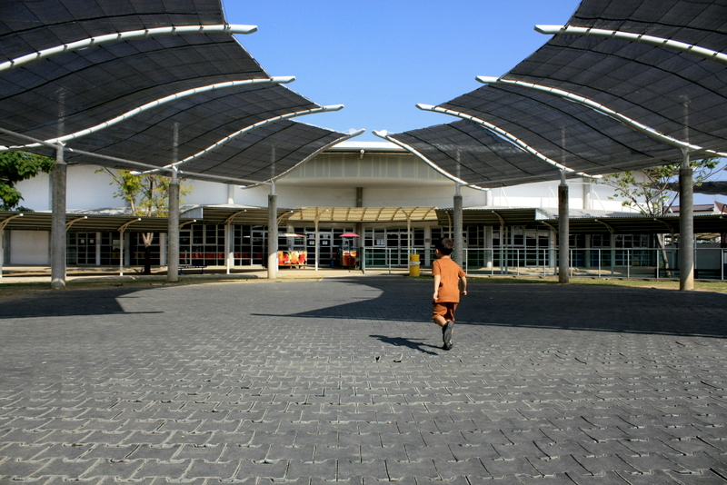
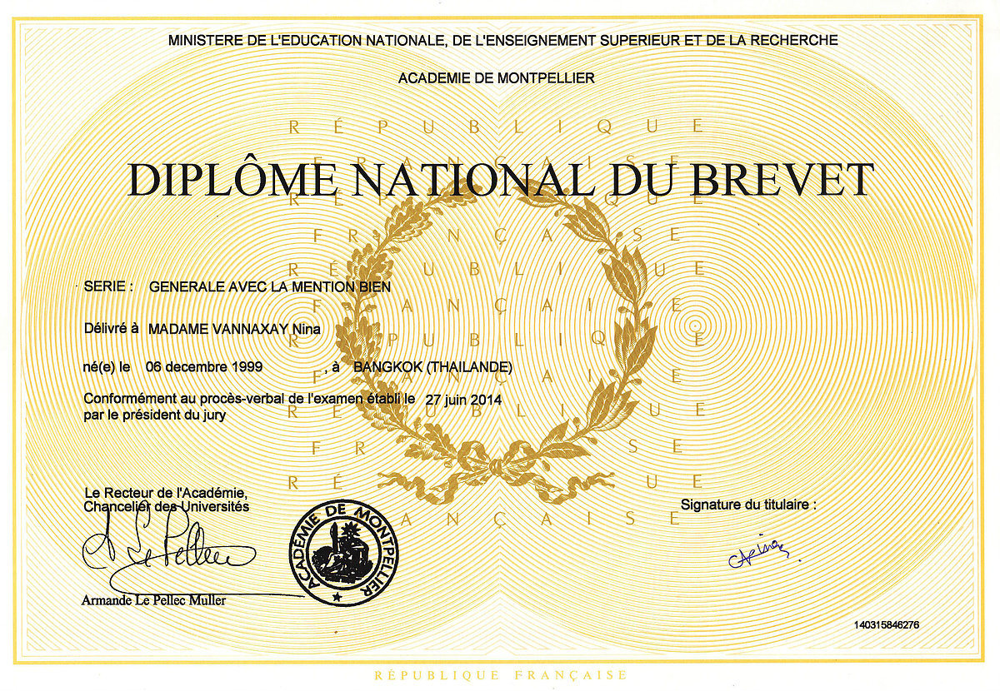
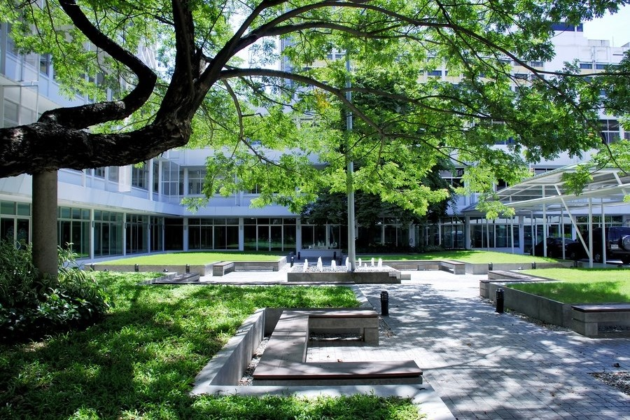

I've always had very wild dreams about doing something that could benefit others such as becoming a doctor.
Growing up in the twentieth century with ideas and knowledge at every corner lead me to discover many more job choices that were not only related to medicine but were also as beneficial to humankind.
Like every other students, I have my weak and strong points in the education system. Biology and chemistry were two of those subjects
I never really spent hours and hours to try to make sense of, unlike math. I found it really logical and easy to understand which really drew me into it.
Nina Vannaxay
17 | Potato | Superhero for dogs
About Me
Education
Born in Bangkok, Thailand
Lives & studies in Bangkok, Thailand
2003-2015: FRENCH INTERNATIONAL SCHOOL OF BANGKOK

I first attended the French International School of Bangkok in 2002. I have gotten my Brevet Certificate -- which is a certificate we get once we take the french Brevet test at the end of grade nine -- with the second highest honour called “Mention Bien” (which means “Good”)
I first attended the French International School of Bangkok in 2002. I have gotten my Brevet Certificate -- which is a certificate we get once we take the french Brevet test at the end of grade nine -- with the second highest honour called “Mention Bien” (which means “Good”)

2015-2018: Panyarat Highschool
I've always had very wild dreams about doing something that could benefit others such as becoming a doctor.
Growing up in the twentieth century with ideas and knowledge at every corner lead me to discover many more job choices that were not only related to medicine but were also as beneficial to humankind.
Like every other students, I have my weak and strong points in the education system. Biology and chemistry were two of those subjects
I never really spent hours and hours to try to make sense of, unlike math. I found it really logical and easy to understand which really drew me into it.

Interests